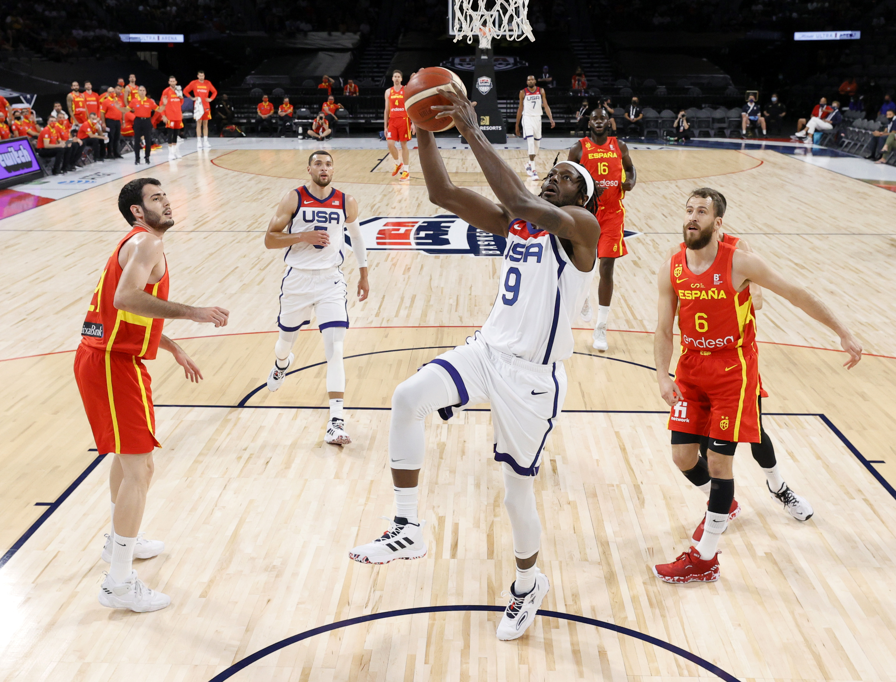
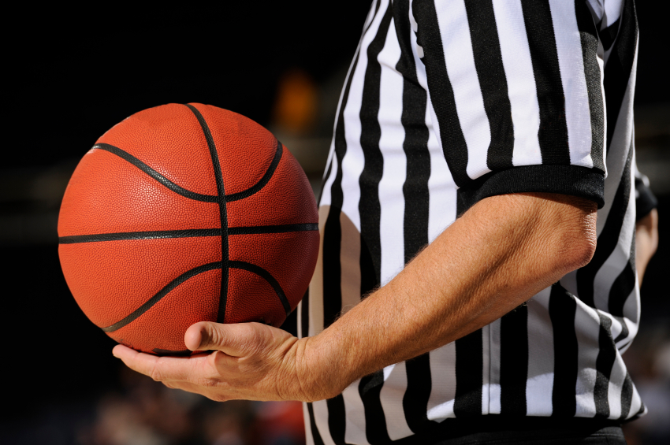
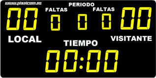
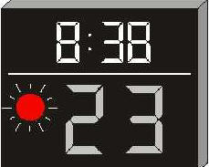

Reglas del básquetbol
Las reglas del básquetbol son elaboradas y modificadas por la FIBA (Federación Internacional de Baloncesto). En algunos casos, estas reglas difieren de las usadas en algunas ligas como la NBA (National Basketball Association) o la WNBA (Women’s National Basketball Association).
El básquetbol internacional se rige por las siguientes reglas fundamentales:
Juego
- En un partido se enfrentan dos equipos de doce jugadores cada uno.
- El juego comienza con un salto entre dos jugadores de ambos equipos en el centro de la cancha.
- Los equipos pueden hacer tantas sustituciones como deseen.
- Cuando un equipo tenga posesión del balón, tendrá 24 segundos para intentar un tiro al aro.
- Un jugador no podrá permanecer en la zona restringida del aro del contrincante durante más de tres segundos para el ataque.
- El jugador no podrá driblar, detenerse y luego continuar driblando. En ese caso, tiene dos pasos para intentar un tiro al aro o pasar el balón a un compañero.
- Una vez que un equipo pasa la línea de mitad de cancha, no podrá volver para atrás.

Faltas
- Los contactos ilegales entre contrincantes son considerados faltas personales y acarrean sanciones individuales y colectivas.
- Un jugador puede cometer cinco faltas en un partido.
- Un equipo solo podrá hacer cuatro faltas en cada cuarto. En caso de superar este número, se le otorgarán al equipo rival dos tiros.
- Los tiros libres también son otorgados cuando se le comete una falta a un jugador durante el lanzamiento.

Puntaje
- Gana el equipo que obtiene mayor cantidad de puntaje, el puntaje se logra encestando el balón en el aro del equipo contrario.
- Un partido de básquetbol no puede terminar en empate, por lo que al finalizar el partido se otorgan sucesivos tiempos extra de cinco minutos hasta que algún equipo se haga con la delantera.
- Las canastas valen tres puntos cuando el lanzamiento se realiza por fuera de la línea de tres puntos, dos puntos cuando el lanzamiento se realiza por dentro de la línea de tres puntos y un punto cuando el lanzamiento es de tiro libre.

Tiempo
- El juego dura cuatro períodos de diez minutos cada uno, con la posibilidad de un tiempo extra de cinco minutos en caso de que exista un empate en la puntuación. En la NBA los cuartos duran doce minutos cada uno.
- El tiempo se para cada vez que el balón no está en juego.
- El tiempo muerto es un tiempo de un minuto que puede ser pedido por alguno de los dos entrenadores para que su equipo se reúna en el banco.
